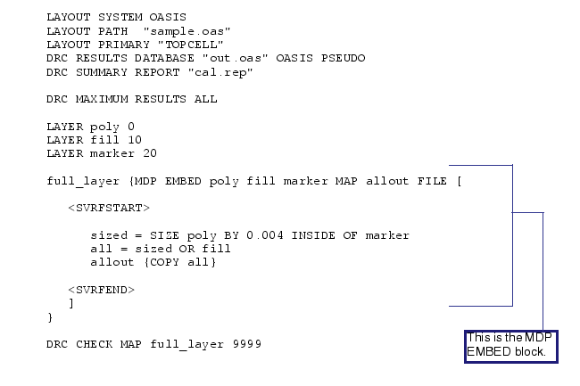

MDP EMBED input_layer [...input_layerN] [MAP output_layer [EDGE]]
{FILE litho_file_block |
FILE‘[’
[section_size sec_value]
maximum_output_count count
[svrf_range r]
[vboasis_path filepath [-noCheck] [-fastindex [layer datatype]]]
[svrf_layer_name {layer_name |
{layer_name oasis_layer_number [oasis_layer_datatype]}...}]
[vboasis_precision_multiplier {n[/d] | AUTO}]
[vboasis_layout_magnify n[/d]]
[vboasis_injection [-size bin_size | -size_factor size_multiplier] [-preserve 0 | 1] [-force]]
[vboasis_path2 filepath [-noCheck] [-fastindex [layer datatype]]]
[svrf_layer_name2 {layer_name |
{layer_name oasis_layer_number [oasis_layer_datatype]}...}]
[vboasis_precision_multiplier2 {n[/d] | AUTO}]
[vboasis_layout_magnify2 n[/d]]
[vboasis_injection2 [-size bin_size | -size_factor size_multiplier] [-preserve 0 | 1]]
[vboasis_path3 filepath [-noCheck] [-fastindex [layer datatype]]]
[svrf_layer_name3 {layer_name |
{layer_name oasis_layer_number [oasis_layer_datatype]}...}]
[vboasis_precision_multiplier3{n[/d] | AUTO}]
[vboasis_layout_magnify3 n[/d]]
[vboasis_injection3 [-size bin_size | -size_factor size_multiplier] [-preserve 0 | 1]]
[vboasis_path4 filepath [-noCheck] [-fastindex [layer datatype]]]
[svrf_layer_name4 {layer_name |
{layer_name oasis_layer_number [oasis_layer_datatype]}...}]
[vboasis_precision_multiplier4 {n[/d] | AUTO}]
[vboasis_layout_magnify4 n[/d]]
[vboasis_injection4 [-size bin_size | -size_factor size_multiplier] [-preserve 0 | 1]]
jobdeck[2] path[-ejobdeck_clipping_severity {1 | 2}] [-ejobdeck_pattern_suffix suffix]
[-data_search_path path]
[data_extent {HDB | FILE | FILE2 | FILE3 | FILE4| DIRECTIN}]
[index_options [-topcell cellname] [-parallelCblocks]]
[oasis_output_path {-RDB | [-perSection] path | -INDEX [NOVIEW]}]
[oasis_output_layers {layer [datatype] | {map_name layer [datatype]}...}]
[oasis_output_primary [HDB | DIRECTIN | FILE | -explicit topcell_name]
[oasis_output_options [-cblock] [-maximum_vertex {mv | ALL}] [-precision val]
[-magnify val]]
[direct_FS_access [INPUT] [INTERMEDIATE]]
[mrc_only {0 | 1}]
[mdp_remote_tmp dir]
[<SVRFSTART>
svrf_statements
<SVRFEND>]
‘]’
}
The MDP EMBED command provides section-based processing for SVRF commands.
A required argument that specifies the name of an original or derived polygon layer(s). This is the layer that contains the data to which Calibre applies the embedded SVRF functionality.
An optional keyword that specifies the output layer. When not specified, the one output layer in the embedded SVRF statement group is used for the output of the MDP EMBED operator. This parameter is necessary when there are multiple output layers, in which case there must be exactly one MDP EMBED statement for each output layer. By default, the MAP output_layer string is used as the output layer name in the OASIS direct output files (although the -perSection mode does not support layer names). All layers in the output file contain layer names that match the MAP output_layer string. If the output is an edge-type layer, then the EDGE keyword must also be used.
An optional argument that specifies that the map size parameters are contained in a reusable parameter block defined using the LITHO FILE SVRF statement.
A required keyword that specifies that the map size parameters are contained inline within the square brackets ([ ]). Square brackets must surround all parameters appearing after the keyword FILE. In addition, everything within the square brackets must comply with the following requirements:
Keywords and parameters must be on lines strictly between the left and right brackets (that is, cannot be on the same line).
You can include comments within the section of the operation set off by square brackets, if you begin the comments with a double forward slash (//). This comment character indicates that all text until the next newline is comment text. The “/* */” style of comments are not permitted.
An optional argument that specifies the desired size (height and width) of the square section in user units. No implication is made between this parameter and the location of “boundaries” in embedded SVRF. The default is 250 microns.
A required argument that specifies the limit of number shapes for output from MDP EMBED. The default is to output all shapes (recommended). The default is all.
An optional argument that specifies the buffer size for section processing. The default is determined automatically and is specified in user units.
An optional argument that sllows MDP EMBED to take input from an OASIS DDE file. The data is placed on an SVRF layer named by the next keyword. To use this functionality, the Calibre database must be non-MCPO, or a run time error results.
The embedded SVRF is computed within the extent of the Calibre top cell, so the OASIS top cell extent must be explicitly assigned, either through the dummy layer extent called from the HDB or by using the data_extent keyword. A run time warning is issued if there is no overlap.
If vboasis_path2, vboasis_path3, and vboasis_path4 are specified (in conjunction with vboasis_path), this means that a second, third, and fourth OASIS input are needed.
The -noCheck option can be specified when checks on the input OASIS DDE layout file are not possible because it has not been generated. This would typically happen when the file is expected to be generated by another SVRF command in the same rule file and thus is not available during parsing for checking purpose. When using -noCheck, use extra care when specifying the file path and associated PRECISION values to avoid errors that are encountered much later.
The -fastIndex keyword enables a “fast mode” of index generation if the input file is an OASIS.MASK file. The file created in fast mode is valid only if the input OASIS.MASK file contains a single layer-datatype pair. Fast mode index generation should be avoided when there are multiple layers or datatypes in the input. By default, fast mode index generation assumes layer-datatype of 0-0. You can override these values by specifying layer-datatype pair as an argument to -fastIndex option.
Several restrictions and caveats apply to the use of this alternate input method, documented in the Direct OASIS Input arguments described in “Global Calibre FRACTURE Arguments”.
Compressed layouts (those ending in the extension .gz) are not supported by vboasis_path.
An optional argument that specifies the names, numbers, and optional data types of the embedded SVRF layers corresponding to OASIS DDE geometry. If embedded SVRF is used with the vboasis_path keyword, both HDB and OASIS DDE data may be input to the embedded operation. The SVRF layer names for the OASIS DDE layers must be specified with the keyword. For a single layer, the layer_name only is used. For multiple layers, each name and corresponding layer number in the OASIS file must be specified.When OASIS DDE input is used with HDB input, the PRECISION settings of the HDB and OASIS DDE file must match.
The svrf_layer_name2 keyword is used to map layers read from vboasis_path2, svrf_layer_name3 maps layers from vboasis_path3, and svrf_layer_name4 maps layers from vboasis_path4.
An optional argument that multiplies the PRECISION value by the supplied number n, and then scale the data from the file by the same amount to retain the same absolute scale as the original PRECISION setting. The default value for n is 1. The /d is used to express a rational number as a fraction (for example, a multiplier of 1.5x is declared as “3/2”).
There may be occasions when you want to re-interpret the PRECISION setting of the OASIS DDE file as specified using the vboasis_path keyword. For instance, you may want a larger PRECISION setting to allow finer shape modifications in embedded SVRF code.
If AUTO is supplied instead of a ratio, Calibre attempts to infer the correct ratio but fails if it is not a rational number, or if the combination of inferred numerator and denominator would cause arithmetic overflow. This keyword requires the use of embedded SVRF.
If vboasis_precision_multiplier2, vboasis_precision_multiplier3, and vboasis_precision_multiplier4 are specified (in conjunction with vboasis_precision_multiplier), the PRECISION scale is applied to the second OASIS input specified by vboasis_path2, vboasis_path3, and vboasis_path4, respectively.
An optional argument that aligns the OASIS-direct-input coordinate system with the HDB coordinate system by adjusting its scale. The scale is specified as the numerator and denominator of a rational number.
This keyword is primarily used to apply embedded SVRF at the scale of the mask, but after all inverse transforms have been applied to align the MDP file inputs with the HDB coordinate system. In this case, scale up the HDB coordinate system using LAYOUT MAGNIFY and use this keyword to apply the same scale to the direct-input database.
If vboasis_layout_magnify2, vboasis_layout_magnify3, and vboasis_layout_magnify4 are specified (in conjunction vboasis_layout_magnify), the scale is applied to the second, third, and fourth OASIS input specified by vboasis_path2, vboasis_path3, and vboasis_path4, respectively.
The OASIS DDE file specified using vboasis_path may contain cells that have large amounts of data and have a large extent. These large cells degrade performance in section mode processing. To overcome this issue, cells can be partitioned into bins.
The sizes of the cells that are binned and the size of each bin (bin_size) is determined automatically by default when vboasis_injection is specified. You can control the bin size by providing a size multiplier using the option -size_factor size_multiplier (the default value is 1.0).
Alternately, the bin_size can be explicitly specified using the option -size bin_size in microns. Any cell whose extent has width or height more the bin_size is considered for binning.
The vboasis_injection option creates temporary data which may be reused if it is preserved using the -preserve option (the default is 0). Use the -force option to ignore any existing data.
The temporary data is read or written in a directory named file_path.lcb where file_path is argument specified to vboasis_path. The location of this directory is the same as that of file_path. This behavior can be changed by specifying a colon-separated list of directories using the UNIX environment variable MDPIndexSearchPath (refer to the section “Setting the Location of the Index File” in the Calibre MDPview User’s and Reference Manual for full details). The directories are searched in the order they are listed for reading or writing to the temporary directory.
If job deck input is used, the options apply to all OASIS files referenced by the job deck.
If vboasis_injection2, vboasis_injection3, and vboasis_injection 4 are specified (in conjunction with vboasis_injection), the options apply to the second, third, and fourth OASIS input files specified by vboasis_path2, vboasis_path3, and vboasis_path4, respectively.
If this optional argument set is specified, input is taken directly from a MEBES-extended job deck. Such job decks may reference MEBES or OASIS chip files. The following options are available for job deck loading through the viewer:
-ejobdeck_clipping_severity {1 | 2} — Allows the display of data larger than the described extent in the job deck. By default, if Calibre encounters data larger than the extent, it generates an error and does not load the job deck. If set to 1, Calibre produces a warning message instead and the job deck is loaded. If set to 2, Calibre ignores the condition entirely and loads the job deck.
-ejobdeck_pattern_suffix suffix — Allows pattern files with different nomenclature (such as the OASIS .oas extension) to be read in MEBES extended job decks.
-data_search_path path — Specifies the path for a data search.
The PRECISION setting for the job deck is set to the HDB PRECISION setting. The keywords jobdeck and jobdeck2 are mutually exclusive with several other direct-input keywords:
vboasis_path
vboasis_precision_multiplier
vboasis_layout_magnify
This keyword also interacts with several other MDP EMBED keywords:
svrf_layer_name
data_extent
vboasis_injection
direct_FS_access
An optional argument that, when vboasis_path option is specified, uses the extent specified from one of the following options:
HDB — Use the cell extent from the hierarchical database (refer to “Embed SVRF Commands in an MDP EMBED Statement” for further details on cell extents in HDBs). This is the default value.
FILE — Use the extent from vboasis_path.
FILE2 — Use the extent from vboasis_path2.
FILE3 — Use the extent from vboasis_path3.
FILE4 — Use the extent from vboasis_path4.
DIRECTIN — Use the extent of the logical OR of all direct inputs (vboasis_path[2]).
If you specify data_extent FILE or data_extent DIRECTIN, the extent is defined as (0,0)-(152400, 152400) um which is the full mask extent. If you only need to verify a smaller region of the mask, specify data_extent HDB and define the desired extent using an SVRF POLYGON statement to define the exact extent desired.
An optional argument that sets OASIS input module and indexing options. The -topcell option specifies the top cell name for indexing. The -parallelCblocks keyword enables parallel indexing for non-strict CBLOCK OASIS data. The cell cblocks is parsed in parallel during sequential parsing of non-strict OASIS files for faster index creation.
An optional argument that diverts output geometry from the HDB to one or more new OASIS files. This creates a single OASIS file located at path, unless -perSection is specified, in which case the output for each section is placed into a separate, syntactically complete OASIS file and no full result OASIS is created.
The -RDB keyword takes output file information from the DRC CHECK MAP statements in the embedded rule file; only a subset of DRC CHECK MAP functionality is supported. Specifically:
Only OASIS type is allowed.
The filename must be explicitly stated.
The AREF, AUTOREF, MAXIMUM VERTEX, MAXIMUM RESULTS, TEXTTAG, PREFIX NAME, APPEND NAME, and PROPERTIES features are not currently supported.
All output files should be on a high-performance file system. The OASIS files have a two-level hierarchy in which the MDP EMBED sections form uniquely placed cells. The PRECISION setting of the OASIS file matches the PRECISION setting of the HDB.
The optional -INDEX [NOVIEW] keywords specify that an OASIS-type DDO database created by this command is to be indexed. The NOVIEW option generates the index faster in exchange for a slower drawing speed in the viewer.
The following example illustrates using -RDB to create multiple DDO OASIS files for different checks (enabling limited DRC CHECK MAP functionality for OASIS files only):
LITHO FILE eMRC [
oasis_output_path -RDB
<SVRFSTART>
mrc_1 { EXT inp_1 inp_2 < 0.05 REGION } \
DRC CHECK MAP mrc_1 OASIS 0 “output/mrc_err.oas”
mrc_2 { INT inp_1 < 0.05 REGION }
DRC CHECK MAP mrc_2 OASIS 1 “output/mrc_err.oas” \
sized { SIZE inp_1 BY 0.05 } \
DRC CHECK MAP sized OASIS 0 “output/sized.oas”
<SVRFEND>
]
The following example illustrates using -perSection to create multiple DDO files for each section:
LITHO FILE eMRC [
oasis_output_path -perSection output/ddo_files
// This creates a directory “output/ddo_files” with
// s_#.oas file for each section
<SVRFSTART>
sized { SIZE inp_1 BY 0.05 }
<SVRFEND>
]
An optional argument that specifies the OASIS layer and data type numbers for SVRF layers written to an OASIS file. This keyword requires specification of the oasis_output_path keyword. There are two possible forms:
The first form is used if the embedded rule deck produces only a single layer:
oasis_output_layers layer [datatype]
where layer is the layer name and datatype is the OASIS data type.
The second form is used for multiple layers and requires the use of the MAP secondary keyword in the MDP EMBED SVRF calls:
oasis_output_layers {map_namelayer [datatype]}...
The map string in the SVRF call must match the map_name value in this keyword specification. All output layers must be mapped using this keyword.
When oasis_output_layers is specified in section-based processing, additional information appears in the transcript, reporting the DDO per-rule output shape counts. For example:
DIRECT OUTPUT RuleCheck flat1::<1> COMPLETED. Number of Results = 3375 (3375)
DIRECT OUTPUT RuleCheck flat2::<1> COMPLETED. Number of Results = 3375 (3375) The oasis_output_path keyword supports multiple MDP EMBED blocks writing to a single OASIS file. If multiple outputs are written to a single OASIS file, then the outputs from all the blocks are added to the OASIS file. For example:
LITHO FILE ESVRF_1 [
//maximum_output_count 1000000000
//DDO
oasis_output_path "./out.oas"
oasis_output_primary HDB
oasis_output_options -cblock -maximum_vertex ALL
oasis_output_layers A_out 1 0 B_out 2 0 D_out 4 0
]
A_out = MDP EMBED A_in B_in FILE ESVRF_1 MAP A_out
B_out = MDP EMBED A_in B_in FILE ESVRF_1 MAP B_out
D_out = MDP EMBED A_in B_in FILE ESVRF_1 MAP D_out
LITHO FILE ESVRF_2 [
//DDO
oasis_output_path "./out.oas"
oasis_output_primary HDB
oasis_output_options -cblock -maximum_vertex ALL
oasis_output_layers C_out 3 0 E_out 5 0 F_out 6 0]
C_out = MDP EMBED C_in E_in FILE ESVRF_1 MAP C_out
E_out = MDP EMBED C_in E_in FILE ESVRF_1 MAP E_out
F_out = MDP EMBED C_in E_in FILE ESVRF_1 MAP D_out
Each of these separate blocks are written to a single OASIS file.
An optional argument that specifies the source of the top cell name in OASIS output. The values are as follows:
HDB — The topcell name from the HDB as the topcell name of OASIS output is used.
DIRECTIN or FILE — The topcell name from the vboasis_path input is used.
-explicit topcell_name— The names specified by topcell_name.
The default setting for oasis_output_primary is -explicit top.
An optional argument that specifies options for OASIS output. With the -cblock option, the OASIS output is compressed using CBLOCK record. The use of cblock can reduce the output file size.
The maximum number of vertices (mv) in output polygons can be limited using the -maximum_vertex parameter. The default is 8192 and the symbolic value ALL corresponds to the maximum setting of 4294967295.
The -precision keyword specifies the precision of the OASIS output. The -magnify keyword is used to align the OASIS output coordinate system with the HDB coordinate system.
An optional argument that permits remote processes in a Calibre MTflex invocation to directly access a file system.
INPUT — Causes remote processes to directly access the argument to vboasis_path (including adjunct data such as injection files) and any VSB12 and OASIS files that are arguments to input_file.
INTERMEDIATE — Causes direct writing of temporary intermediate files relating to use of the oasis_output_path keyword.
An optional keyword that, when set to 1, reduces memory usage particularly when using small (100 um or less) section sizes. This keyword is used only for MRC flows that use MDP EMBED where the output is written to file. The default setting is 0 (off).
This keyword deactivates an internal setup code that outputs MDP EMBED data into the HDB. Without this setup code, the data is placed flat into the HDB at the top level. This does not affect MRC flows as there are typically very small amounts of output data produced. However, if the output of MDP EMBED is used in a subsequent SVRF block in the same rule deck, then the flat data can degrade the performance of those SVRF blocks.
An optional keyword that sets the temporary directory for Calibre MTflex processes. A single path is used for all computers used by the invocation of Calibre. The path must be visible to all computers or run time exceptions will occur. The default value is /tmp.
This directory should be on a file system local to each computer. If this is not done, it will introduce system performance issues.
An optional keyword indicating the beginning of the embedded SVRF statement group.
Each SVRF statement must be on a line of its own. Calibre truncates any SVRF line to 1023 characters if you exceed this value.
You can specify multiple rule checks within the embedded SVRF statement group. The output of these rule checks must only be polygon data, not edge or error data. Refer to the Calibre Verification User’s Manual for more information about rule checks.
You cannot specify left- or right-brackets within the embedded SVRF statement group. Therefore, any occurrence of brackets must be replaced as follows:
Left bracket ( [ ) |
<LB> |
Right bracket ( ] ) |
<RB> |
The PRECISION setting of the embedded SVRF statements must match that of the Calibre rule deck containing the PRECISION statement.
An optional keyword indicating the end of the embedded SVRF statement group.
The left and right angle brackets (< >) for <SVRFSTART>, <SVRFEND>, <LB>, and <RB> are literal and required.
See “SVRF Command Support in Embedded SVRF” for a list of SVRF operations that are supported in embedded SVRF statements.
The following is a basic example of MDP EMBED:

The following shows an example of MDP EMBED with two input OASIS files:
LAYOUT PATH "dummy.oas" mag auto
LAYOUT PRIMARY "*"
LAYOUT SYSTEM OASIS
PRECISION 4000
DRC MAXIMUM RESULTS ALL
DRC RESULTS DATABASE "dummy_mdp_dde_dual.oas" oasis
LAYER dde_extent 9951
POLYGON 0 0 26653 21271 dde_extent
xor_lyr {
MDP EMBED dde_extent MAP xor_lyr FILE my_mdp_embed
} DRC CHECK MAP xor_lyr 999
LITHO FILE my_mdp_embed [
section_size 100
oasis_output_path "ddo_mdp_dde_dual.oas"
oasis_output_layers 0
// First OASIS Input
vboasis_path "input1.oas"
svrf_layer_name in_lyr1 50 306
vboasis_injection -size 100
vboasis_precision_multiplier auto
//Second OASIS Input
vboasis_path2 "input2.oas"
svrf_layer_name2 in_lyr2 50 306
vboasis_injection2 -size 100
vboasis_precision_multiplier2 auto
<SVRFSTART>
xor_lyr { in_lyr1 xor in_lyr2 }
<SVRFEND>
] The following is an example rule file that performs the XOR on two extended MEBES job decks and also performs width checks for each of the layers:
layout path "/mywkdr/oas_in/dummy_1000.oas"
layout primary "*"
layout system oasis
layout ultra flex yes
precision 1000
drc maximum results all
drc results database "/mywkdr/oas_out/output.hdb.oas" oasis
drc summary report "/mywkdr/summaryrep_out/output.hdb.rep"
layer dataextent 99
polygon 0 0 152400 152400 dataextent
//polygon 0 0 1000 1000 dataextent
//use a smaller extent to verify a limited region of the job deck
LITHO FILE my_mdp_embed [
jobdeck "/mywkdr/jobdeck/jb1.ejb"
jobdeck2 "/mywkdr/jobdeck/jb2.ejb"
svrf_layer_name jb1_1 1
svrf_layer_name2 jb2_1 1
oasis_output_path "/mywkdr/oas_out/output.ddo.oas"
oasis_output_layers width_jb1_1 11 width_jb2_1 12 xor_lay1_lay2 13
direct_FS_access INPUT INTERMEDIATE
<SVRFSTART>
width_jb1_1 { INT jb1_1 < .2 ABUT < 90 SINGULAR REGION }
width_jb2_1 { INT jb2_1 < .2 ABUT < 90 SINGULAR REGION }
xor_lay1_lay2 { xor jb1_1 jb2_1 }
<SVRFEND>
]
width_jb1_1 {
MDP EMBED dataextent MAP width_jb1_1 FILE my_mdp_embed
} DRC CHECK MAP width_jb1_1 11
width_jb2_1 {
MDP EMBED dataextent MAP width_jb2_1 FILE my_mdp_embed
} DRC CHECK MAP width_jb2_1 12
xor_lay1_lay2 { MDP EMBED dataextent MAP xor_lay1_lay2 FILE my_mdp_embed
} DRC CHECK MAP xor_lay1_lay2 13